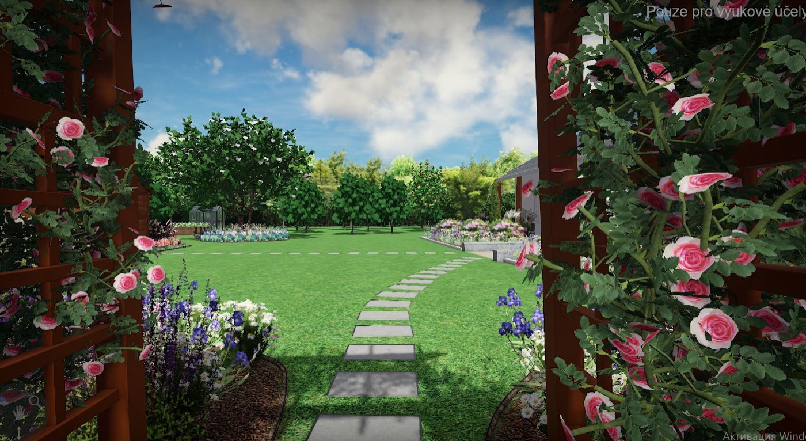
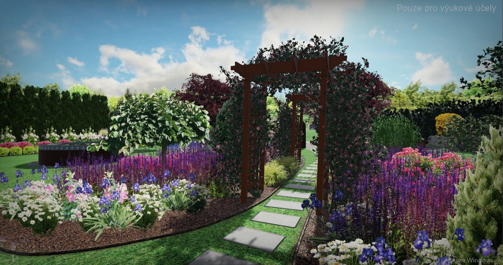
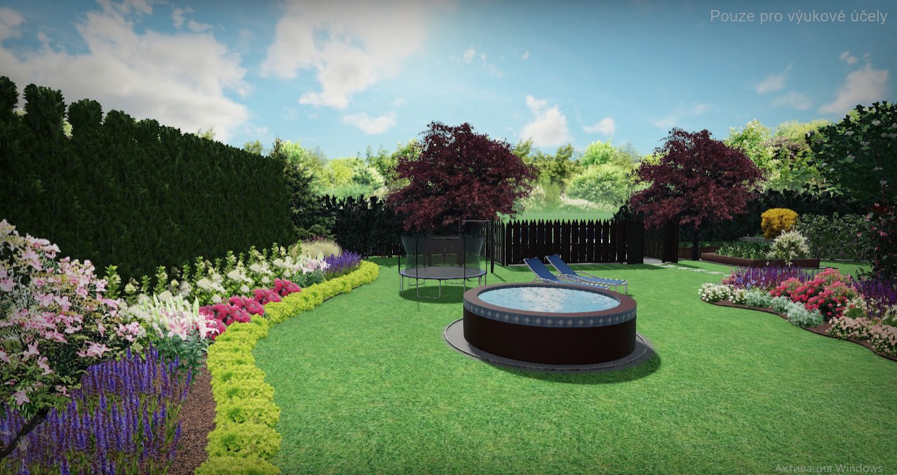
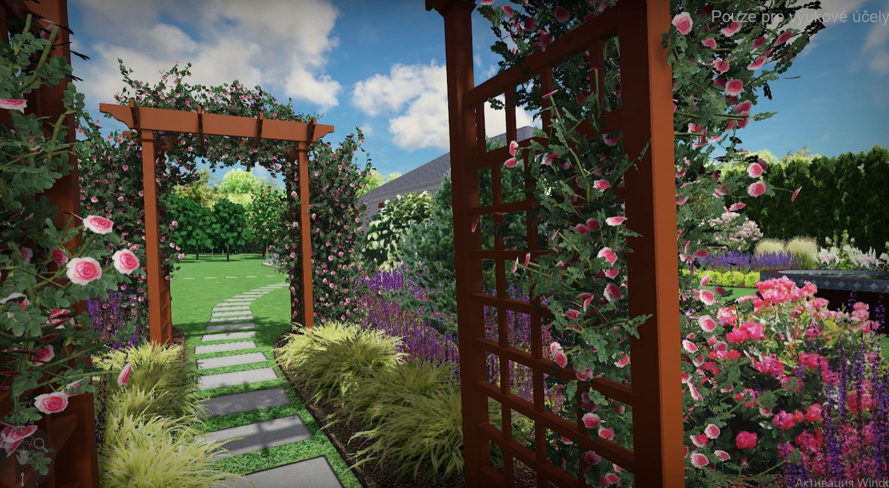
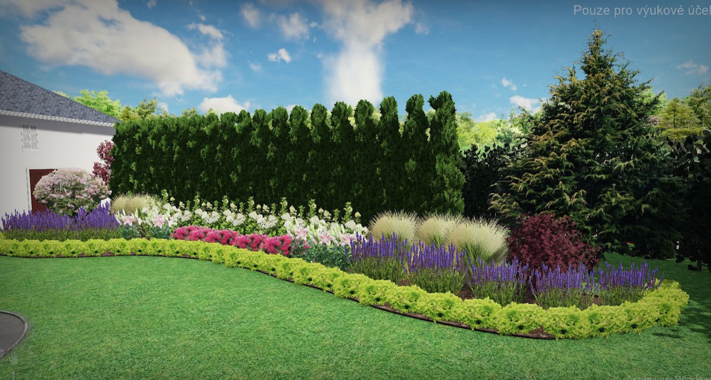
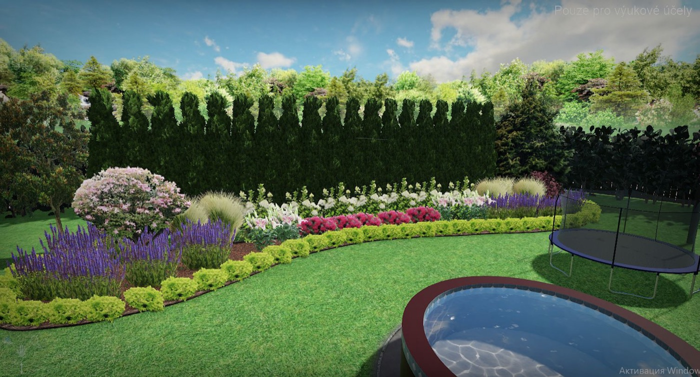
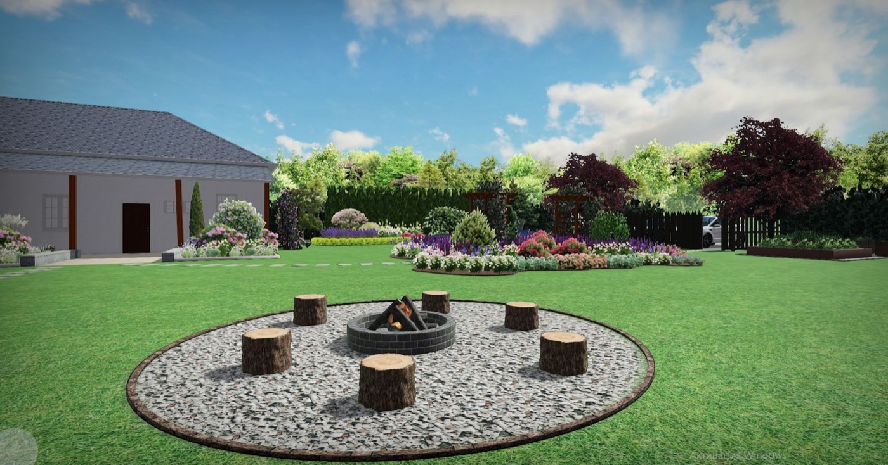
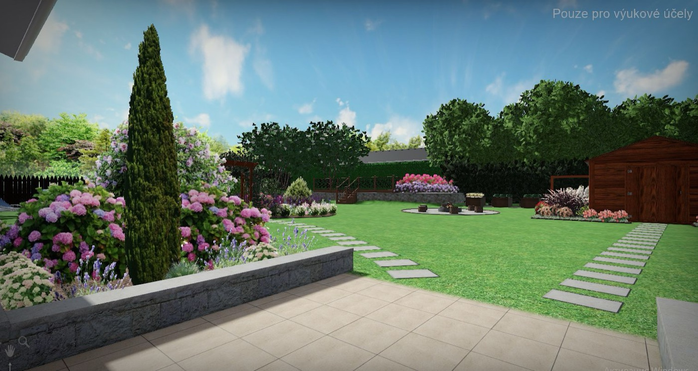

Zahrada, která nevypadá jako ta sousedova
Navrhujeme a zakládáme zahrady s jasným charakterem. A když je hotovo, postaráme se o zeleň i o dům, po celý rok.
Zahradu vymyslíme. A pak se o ni staráme.
Lavanda má dvě části. Jedna tvoří, druhá pečuje. Můžete využít kteroukoli zvlášť, nebo obě dohromady a mít na zahradu i dům jeden kontakt.
Lavanda Art
- Návrh zahrady s 3D vizualizací a videem
- Osazovací plány a rozpočet
- Realizace: záhony, zídky, solitérní stromy
Lavanda Service
- Pravidelná údržba zeleně
- Odborná péče o rostliny a tvarované dřeviny
- Úklid domů, i v zimě
Zahrada postavená na rostlinách, ne na trávníku
Většina nových zahrad v okolí si je podobná: trávník, pár okrasných trav, živý plot. My pracujeme jinak. Zahradě dáme pevnou kostru ze zídek, cest a záhonů a do ní vysadíme rostliny, které mají tvar a vydrží desítky let.
Vzrostlý tvarovaný strom udělá ze zahrady hotové místo během jedné sezony. Nemusíte čekat roky, až něco doroste.

Tvarované stromy a bonsaje
Zahradní bonsaje a tvarované solitéry jako hlavní bod zahrady. Vybereme kus, který sedí k domu, a naučíme vás o něj pečovat. Nebo se o něj postaráme sami.
Zídky, cesty a terasy
Opěrné zídky, vyvýšené záhony, nášlapné cesty. Pevné prvky dají zahradě řád a fungují i v zimě, kdy nic nekvete.
Záhony, které kvetou postupně
Ke každému návrhu dostanete kalendář kvetení. Záhon skládáme tak, aby v něm od jara do podzimu vždy něco kvetlo.
Japonské a tematické zahrady
Kámen, voda, střih. Zahrady v japonském stylu jsme navrhovali a stavěli roky a umíme je přizpůsobit zdejšímu klimatu.
Rodinné zahrady
Pískoviště ve stínu, houpačka, bazén, ohniště, místo na zeleninu. Všechno má na pozemku své místo a nepřekáží si.
Úpravy stávající zahrady
Nemusíme začínat od nuly. Ponecháme, co na pozemku roste a má smysl, a doplníme to, co chybí.
Zahradu uvidíte dřív, než do ní rýpneme
Návrh neodevzdáváme jen jako výkres. Dostanete 3D pohledy a video, ve kterém se zahradou projdete. O tom, co se vám líbí, se rozhodnete před realizací, ne po ní.
Konzultace na místě
Projdeme pozemek, zeptáme se, jak na zahradě chcete žít, a zaměříme, co už na ní roste.
Návrh a vizualizace
Studie, 3D pohledy, video, osazovací plány a seznam rostlin s dobou kvetení.
Rozpočet a realizace
Položkový rozpočet na rostliny i práce. Zahradu lze zakládat najednou, nebo po etapách.
Péče po dokončení
Zahradu vám předáme s návodem k péči. Pokud chcete, naváže na to Lavanda Service.
Relaxační zahrada s růžovými oblouky
Rodinná zahrada u letního domu na Osoblažsku. Majitelé chtěli soukromí, místo k odpočinku a hlavně květinové záhony, které budou působit uspořádaně.
Vyšlapanou cestičku jsme zachovali a proměnili v nášlapnou cestu se dvěma oblouky pro popínavé růže. Kolem ní vznikl symetrický centrální záhon. Další záhony jsou u terasy, u zahradního domku a v odpočinkové části u bazénu. Původní stromy a keře zůstaly na svých místech.
- Pozemek 2 790 m²
- 5 květinových záhonů
- Živý plot z bobkovišně
- Bazén, ohniště, houpačka, dřevník
- Návrh 2026






Pořádek venku i uvnitř
Zahrada je hezká tak dlouho, dokud se o ni někdo stará. Lavanda Service přijíždí pravidelně, ve stejném složení a ví, co na vaší zahradě roste. Stejný tým vám uklidí i dům.
Údržba zeleně
- Sečení a péče o trávník
- Řez a tvarování keřů, živých plotů a stromů
- Péče o bonsaje a tvarované dřeviny
- Pletí, mulčování a hnojení záhonů
- Jarní příprava a podzimní zazimování zahrady
Úklid domů
- Pravidelný úklid domácnosti
- Generální a sezonní úklid
- Mytí oken
- Úklid teras a venkovního posezení
- Funguje celoročně, i když zahrada spí
Rozsah a četnost si domluvíme podle vaší zahrady a domu. Cenu znáte předem. Doplnit: ceník nebo cena „od“, četnost návštěv, oblast dojezdu.
Hanna Zhukova
doplnit portrét
Hanna Zhukova, zahradní architektka
Na Ukrajině jsem vedla vlastní ateliér Green Art a pětičlenný realizační tým. Navrhovali jsme zahrady pro klienty, kteří chtěli něco jiného než ostatní: japonské zahrady, tvarované stromy, kamenné zídky.
Dnes žiji a pracuji v Moravskoslezském kraji. Zdejší zahrady mám ráda pro jejich přirozenost a ráda k ní přidávám to, co umím nejlépe: práci s rostlinami a pevný řád.
Doplnit: vzdělání, počet let praxe, počet realizovaných zahrad, město.
„Nejvíc mě baví rostliny. Dobře vybraný strom udělá pro zahradu víc než cokoli jiného.“
Co říkají klienti
Většina našich zakázek vzniká na doporučení. Sekce se zobrazí, až budou první tři reference. Do té doby ji z webu vynechat.
Začneme konzultací u vás na zahradě
Zavolejte nebo napište. Domluvíme si termín, projdeme pozemek a řekneme vám, co by se s ním dalo udělat a kolik to přibližně stojí. Pošlete nám klidně rovnou pár fotek zahrady.
Napsat e-mail- Telefondoplnit
- E-maildoplnit
- Kde působímeMoravskoslezský kraj upřesnit
- Fakturační údajejméno, IČO, sídlo